Chem 3240 · Lecture 5.3
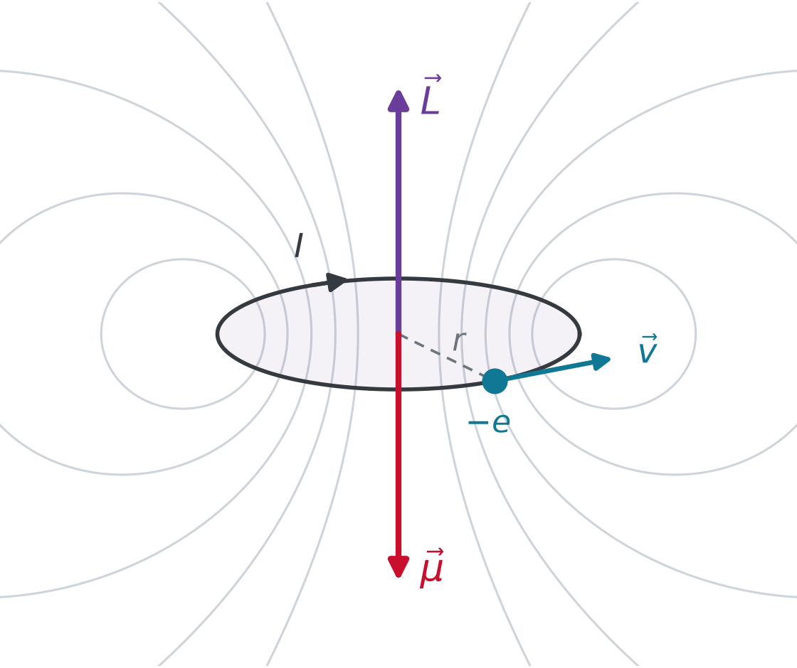
I = \frac{q}{T} = \frac{qv}{2\pi r}
\mu = I\cdot\pi r^2 = \frac{qvr}{2} = \frac{q}{2m}\,L
\vec{\mu} = -\frac{e}{2m_e}\,\vec{L} \qquad \text{electron, } q = -e
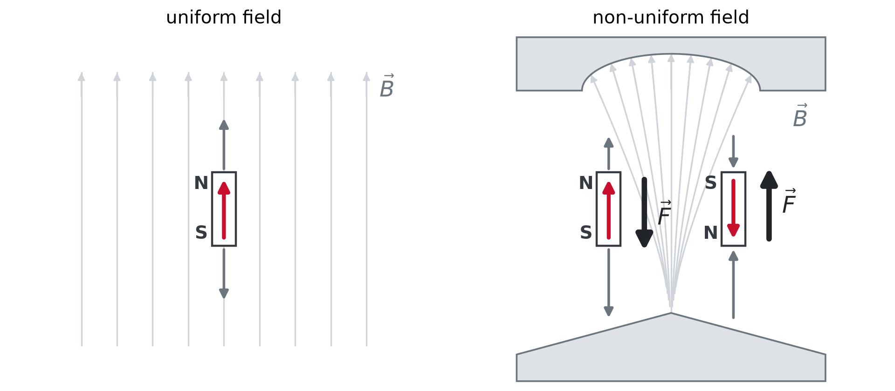
E = -\vec{\mu}\cdot\vec{B} = -\mu_zB \qquad\qquad\qquad F_z = -\frac{\partial E}{\partial z} = \mu_z\,\frac{\partial B}{\partial z}
\hat{\vec{\mu}} = -\frac{e}{2m_e}\,\hat{\vec{L}}, \qquad\qquad \mu_z = -\mu_B\,m_l, \qquad\qquad \mu_B = \frac{e\hbar}{2m_e}
| the Bohr magneton \mu_B as | value | what it sets |
|---|---|---|
| in SI units | 9.274\times10^{-24} J/T | the unit of an electron’s magnetism |
| energy per tesla | 5.79\times10^{-5} eV/T | the shift of a level |
| wavenumber per tesla | 0.467 cm^{-1}/T | the shift of a spectral line |
| frequency per tesla | 14.0 GHz/T | the photon between two magnetic levels |
\hat{H} = \hat{H}_0 + \frac{\mu_BB}{\hbar}\,\hat{L}_z, \qquad E_{nm_l} = E_n + \mu_BB\,m_l
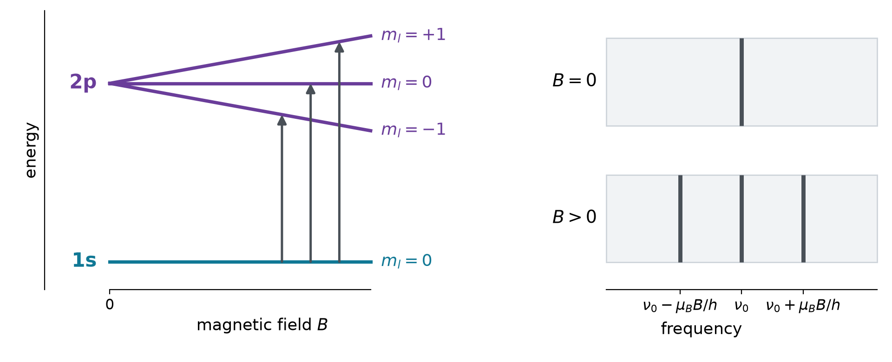
Cadmium’s red line at 643.85 nm shows the triplet. How far from the center are the outer lines at 1.0 T?
\Delta\tilde{\nu} = \frac{\mu_BB}{hc} = 0.467\ \text{cm}^{-1} \qquad\text{against}\qquad \tilde{\nu}_0 = \frac{1}{\lambda} = 15\,532\ \text{cm}^{-1}
\lvert\Delta\lambda\rvert = \lambda^2\,\Delta\tilde{\nu} = (643.85\times10^{-7}\ \text{cm})^2\times0.467\ \text{cm}^{-1} = 0.019\ \text{nm}
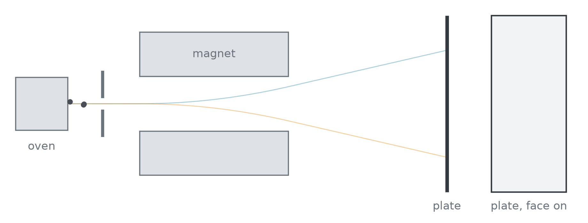
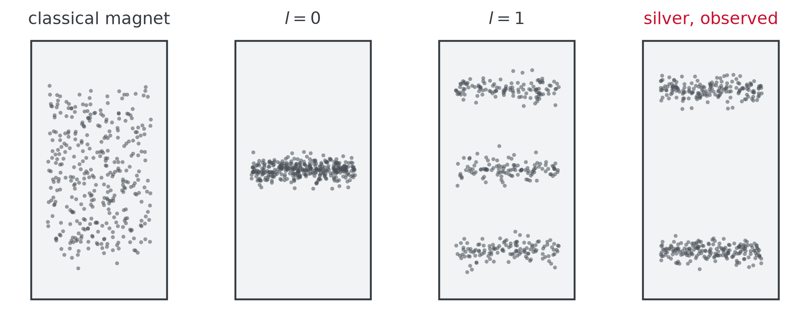
\hat{S}^2\alpha = \tfrac{3}{4}\hbar^2\,\alpha, \quad \hat{S}_z\alpha = +\tfrac{1}{2}\hbar\,\alpha \qquad\qquad \hat{S}^2\beta = \tfrac{3}{4}\hbar^2\,\beta, \quad \hat{S}_z\beta = -\tfrac{1}{2}\hbar\,\beta
\langle\alpha|\alpha\rangle = \langle\beta|\beta\rangle = 1, \qquad \langle\alpha|\beta\rangle = 0
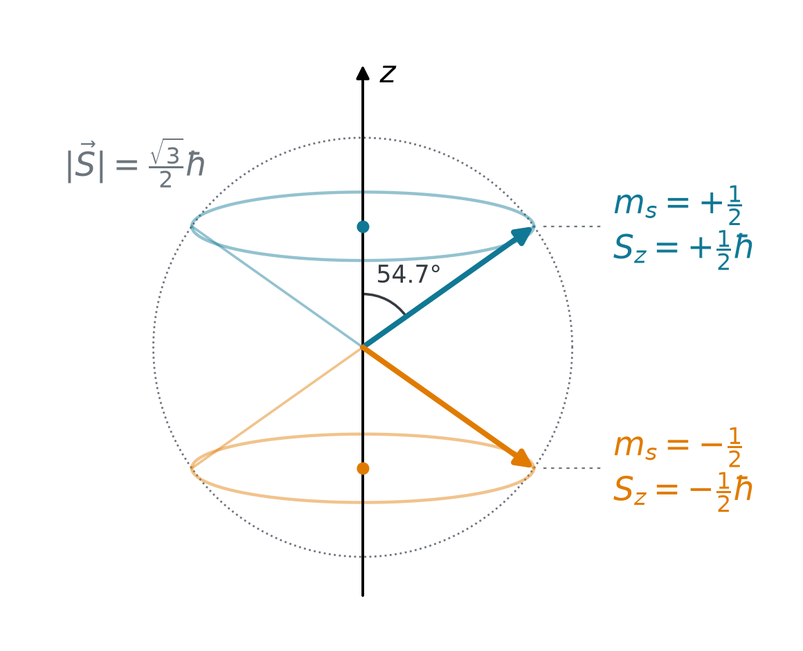
\lvert\vec{S}\rvert = \sqrt{s(s+1)}\,\hbar = \tfrac{\sqrt{3}}{2}\hbar
\cos\theta = \frac{1/2}{\sqrt{3}/2} = \frac{1}{\sqrt{3}} \quad\Longrightarrow\quad \theta = 54.7°
A solid ball of radius r = 2.8\times10^{-15} m turns with angular momentum \frac{1}{2}\hbar. How fast does its equator move?
L = I\omega = \tfrac{2}{5}m_er^2\,\omega = \tfrac{2}{5}m_er\,v \qquad\Longrightarrow\qquad v = \frac{5L}{2m_er} = \frac{5\hbar}{4m_er}
v = \frac{5\times1.055\times10^{-34}}{4\times9.11\times10^{-31}\times2.8\times10^{-15}}\ \frac{\text{m}}{\text{s}} = 5.2\times10^{10}\ \frac{\text{m}}{\text{s}} \approx 170\,c
\chi = c_\alpha\,\alpha + c_\beta\,\beta = \begin{pmatrix}c_\alpha\\ c_\beta\end{pmatrix} \qquad\qquad \alpha = \begin{pmatrix}1\\ 0\end{pmatrix} \qquad \beta = \begin{pmatrix}0\\ 1\end{pmatrix}
\hat{S}_x = \frac{\hbar}{2}\begin{pmatrix}0 & 1\\ 1 & 0\end{pmatrix} \qquad \hat{S}_y = \frac{\hbar}{2}\begin{pmatrix}0 & -i\\ i & 0\end{pmatrix} \qquad \hat{S}_z = \frac{\hbar}{2}\begin{pmatrix}1 & 0\\ 0 & -1\end{pmatrix}
The electron is in \alpha. What can a measurement of S_x give, and how often?
\det\big(\hat{S}_x - \lambda\big) = \lambda^2 - \tfrac{1}{4}\hbar^2 = 0 \;\Longrightarrow\; \lambda = \pm\tfrac{1}{2}\hbar, \qquad \chi_{\pm x} = \frac{\alpha \pm \beta}{\sqrt{2}}
P\left(\pm\tfrac{1}{2}\hbar\right) = \lvert\langle\chi_{\pm x}|\alpha\rangle\rvert^2 = \left(\tfrac{1}{\sqrt{2}}\right)^2 = \tfrac{1}{2}
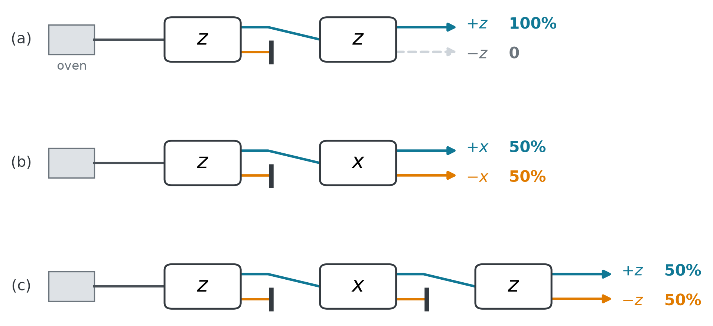
\hat{\vec{\mu}}_s = -g_e\,\frac{e}{2m_e}\,\hat{\vec{S}}, \qquad \mu_z = -g_e\,\mu_B\,m_s \approx \mp\mu_B, \qquad g_e = 2.0023
E = -\mu_zB = g_e\,\mu_BB\,m_s = \pm\tfrac{1}{2}\,g_e\,\mu_BB
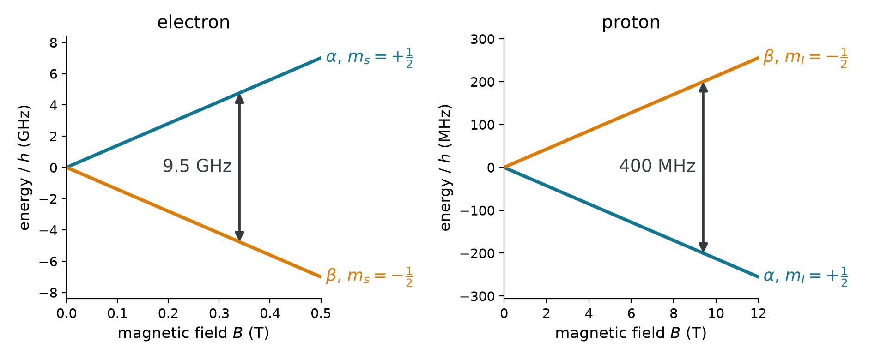
h\nu = g_e\,\mu_BB \quad \text{electron, 28 GHz/T} \qquad\qquad h\nu = g_p\,\mu_NB \quad \text{proton, 42.6 MHz/T}
\psi_{nlm_lm_s} = R_{nl}(r)\,Y_l^{m_l}(\theta, \phi)\times\big(\alpha \text{ or } \beta\big) = |n, l, m_l, m_s\rangle
| operator | eigenvalue | quantum number |
|---|---|---|
| \hat{H}_0 | -Z^2E_h/2n^2 | n = 1, 2, 3, \dots |
| \hat{L}^2 | l(l+1)\,\hbar^2 | l = 0, \dots, n - 1 |
| \hat{L}_z | m_l\,\hbar | m_l = -l, \dots, l |
| \hat{S}^2 | \frac{3}{4}\hbar^2 | s = \frac{1}{2}, always |
| \hat{S}_z | m_s\,\hbar | m_s = +\frac{1}{2}, -\frac{1}{2} |
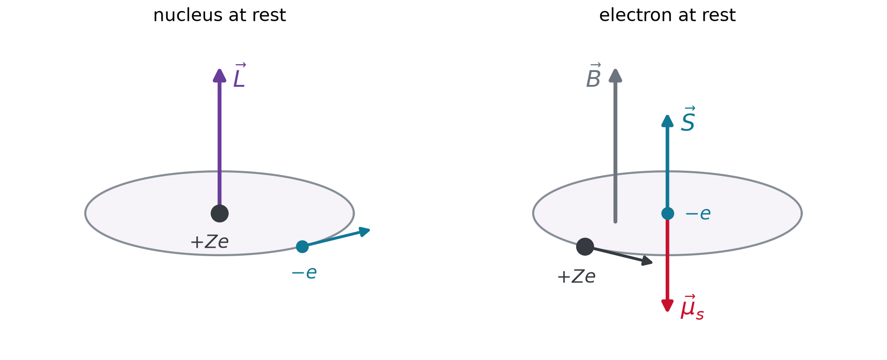
\hat{H}_{\text{so}} = \frac{A}{\hbar^2}\;\hat{\vec{L}}\cdot\hat{\vec{S}}
\hat{J}^2 = \hat{L}^2 + \hat{S}^2 + 2\,\hat{\vec{L}}\cdot\hat{\vec{S}} \qquad\Longrightarrow\qquad \hat{\vec{L}}\cdot\hat{\vec{S}} = \tfrac{1}{2}\left(\hat{J}^2 - \hat{L}^2 - \hat{S}^2\right)
\hat{\vec{J}} = \hat{\vec{L}} + \hat{\vec{S}}, \qquad j = l + \tfrac{1}{2} \ \text{ or } \ l - \tfrac{1}{2}, \qquad m_j = -j, \dots, j
E_{\text{so}} = \frac{A}{2}\Big[j(j+1) - l(l+1) - s(s+1)\Big]
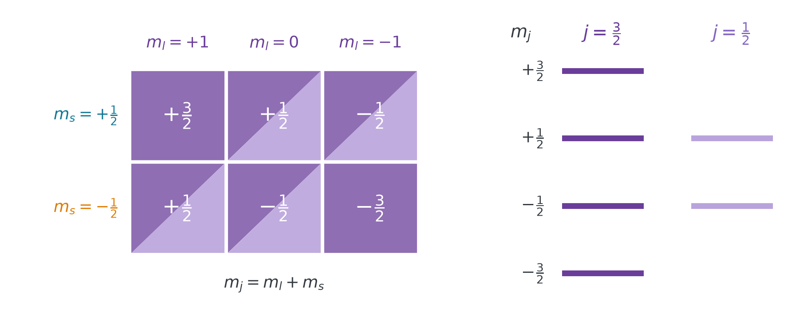
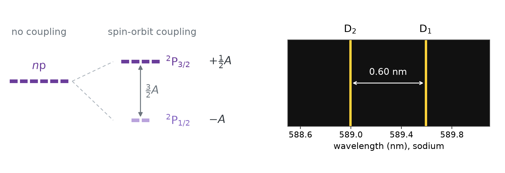
^{2s+1}L_j \qquad\qquad ^2S_{1/2} \qquad\quad ^2P_{1/2},\ ^2P_{3/2} \qquad\quad ^2D_{3/2},\ ^2D_{5/2}
The D lines are at 588.995 and 589.592 nm. Find the splitting of sodium’s 3p level and its coupling constant A.
\tilde{\nu}_2 - \tilde{\nu}_1 = \frac{10^7}{588.995} - \frac{10^7}{589.592} = 16\,978.1 - 16\,960.9 = 17.2\ \text{cm}^{-1}
\tfrac{3}{2}A = 17.2\ \text{cm}^{-1} \qquad\Longrightarrow\qquad A = 11.5\ \text{cm}^{-1} = 1.4\ \text{meV}
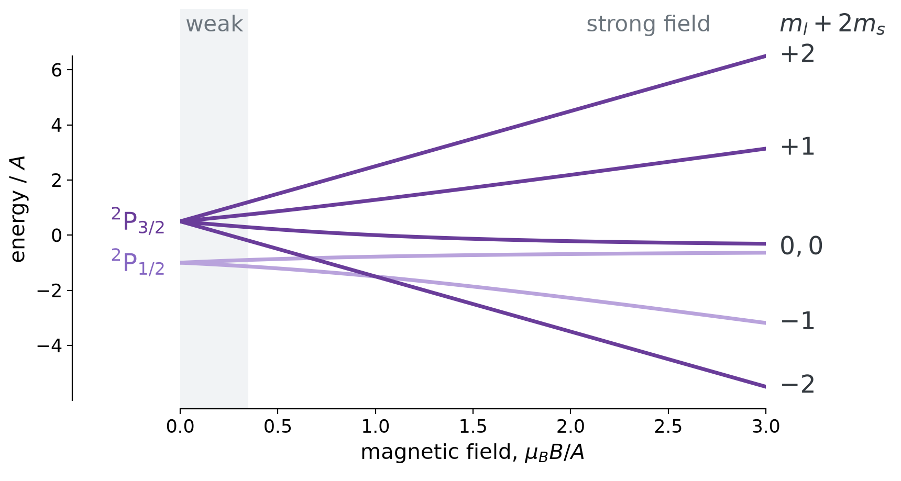
\Delta l = \pm1, \qquad \Delta m_l = 0, \pm1, \qquad \Delta m_s = 0, \qquad \Delta n \ \text{anything}
\text{with spin-orbit coupling:} \qquad \Delta j = 0, \pm1, \qquad \Delta m_j = 0, \pm1
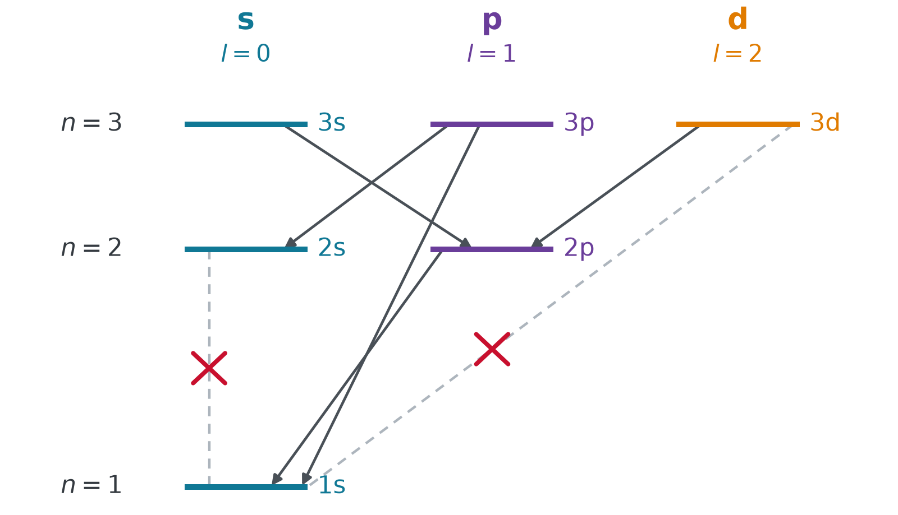
| orbital | spin | |
|---|---|---|
| quantum numbers | l = 0, \dots, n - 1; \ m_l = -l, \dots, l | s = \frac{1}{2} always; \ m_s = \pm\frac{1}{2} |
| states | Y_l^{m_l}(\theta, \phi), functions | \alpha, \beta: two-component vectors |
| length | \sqrt{l(l+1)}\,\hbar | \frac{\sqrt{3}}{2}\hbar |
| z component | m_l\hbar | \pm\frac{1}{2}\hbar |
| magnetic moment | \mu_z = -\mu_Bm_l | \mu_z = -g_e\mu_Bm_s \approx \mp\mu_B |
| origin | motion in space | intrinsic (Dirac’s equation) |
An orbiting electron is a magnet, \mu_z = -\mu_Bm_l, and a field splits a level into 2l + 1. Stern and Gerlach found two spots where one was expected: the electron has an angular momentum of its own, spin, with s = \frac{1}{2}, two states \alpha and \beta, and a moment twice as large as orbital motion would give. Spin states are two-component vectors, and magnets in a row show collapse and incompatible observables directly. Inside the atom spin and orbit couple: only \vec{J} = \vec{L} + \vec{S} is conserved, j = l \pm \frac{1}{2}, and the levels with l > 0 split into the fine structure named by term symbols.
Chem 3240 · Quantum Mechanics